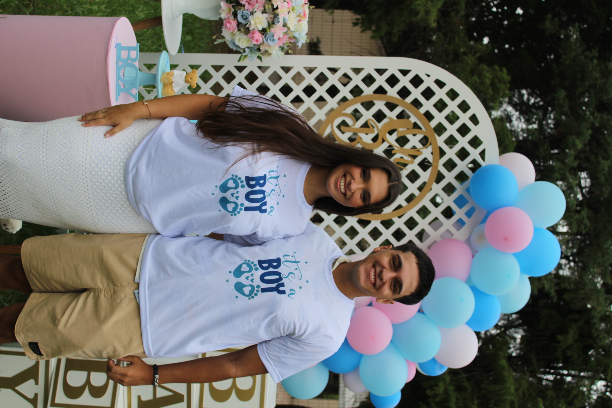
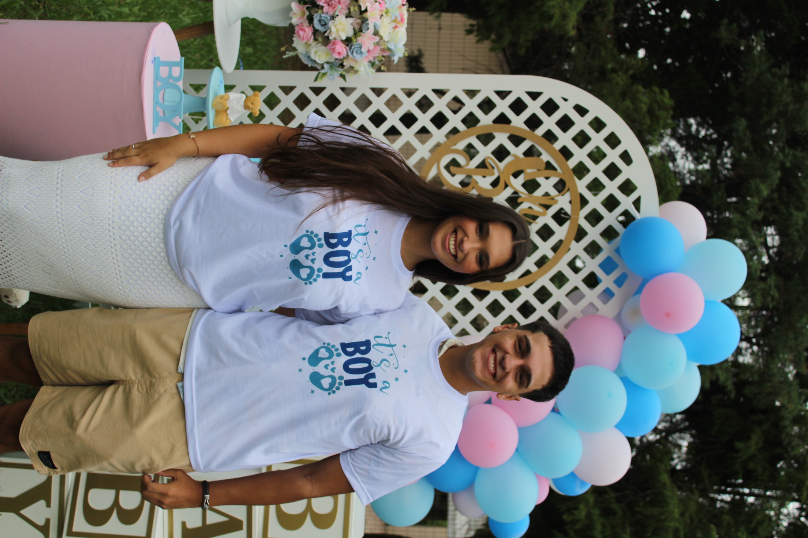

Parabéns pelo seu primeiro dia das mães Chegou uma data tão especial na tua vida amor, o teu primeiro dia das mães com o nosso bolotinha no teu forninho. Eu quero falar por mim e pelo Benjamin no quesito de exaltar a mulher que tu é, tudo que tu estás passando, se dedicando e aprendendo para focar no bem do nosso filho e ficando cada vez mais forte e incrível. Admiro esse teu instinto que está se consolidando, a “aura” de mãe que tu tens e mesmo com todas as adversidades, dores e incômodos, continua firme e focada nos teus objetivos e sonhos. Eu te amo, amor. Amo nós dois juntos, amo as nossas brincadeiras, risadas, abraços, beijos, carinhosos e tudo que fazemos e amo ainda mais o nosso benzinho mais precioso, o Benjamin. Esse é o primeiro dia das mães seu e quero que tu aproveite esse dia especial mais que tudo e saiba que ano após ano, esse dia vai se tornar ainda mais especial, virão as canções na escolinha do neném, as cartinhas, desenhos, entre outras mil coisas (espero que ele seja criativo igual a mamãe). Eu e o Benjamin admiramos muito você, admiramos tudo que você faz por nós, nós te amamos e amamos teu carinho, mamãe.
Beijos do Bruno🙋♂️ e do Benjamin👶.
 
